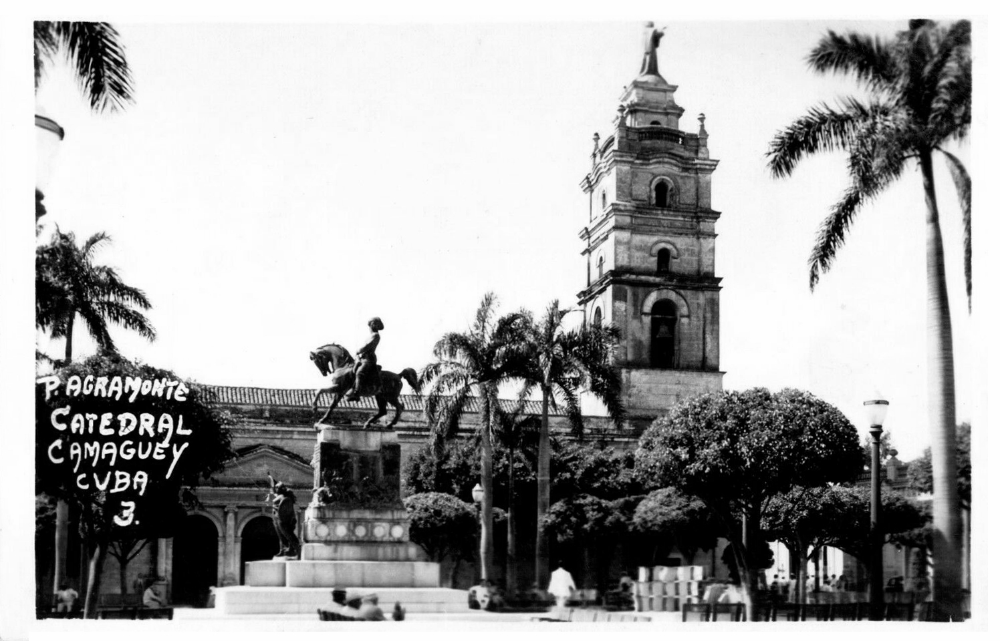

1910
Antes de la firma · Camagüey
El comercio de La Yaba
El Registro Mercantil inscribió a Leoncio Benito Rivas como comerciante y dueño de la bodega La Yaba.
Fuente: certificación del Registro Mercantil de Camagüey, expedida en 1962.
Archivo cronológico
Desde 1923, la firma compró, procesó y comercializó miel y cera cubanas. Esta cronología reúne los testimonios y documentos que conservan su trayectoria.
1910—1962 · Fuentes conservadas
1910
Antes de la firma · Camagüey
El Registro Mercantil inscribió a Leoncio Benito Rivas como comerciante y dueño de la bodega La Yaba.
Fuente: certificación del Registro Mercantil de Camagüey, expedida en 1962.
1923
Registro Mercantil · Camagüey
La escritura de constitución se otorgó el 17 de marzo de 1923 y la sociedad quedó inscrita en el Registro Mercantil el 2 de mayo. El registro indica como domicilio inicial Enrique José 40, Camagüey, y describe el giro de almacén de víveres.
La actividad de miel y cera desde ese año y la ubicación de la planta en San Ramón 206 proceden de la memoria familiar. Los documentos disponibles no fijan cuándo comenzó a funcionar la planta.
Fuentes: certificación del Registro Mercantil, expedida en 1962, y memoria familiar.

1927
Otra sociedad · Camagüey
La certificación mercantil menciona una sociedad comanditaria constituida el 12 de enero de 1927 para comerciar víveres al por mayor. Figuran Juan Llanes Benito, Adolfo Benito Rivas y Leoncio Benito Rivas; este último aparece como socio comanditario. El documento registra su disolución en 1931. La razón social completa no se distingue con seguridad en la copia.
Fuente: certificación del Registro Mercantil de Camagüey, 1962.
1929
Exposición Iberoamericana · Sevilla
Según la memoria familiar, Leoncio Benito aportó miel y cera a la representación cubana en la Exposición Iberoamericana de Sevilla. La muestra ofrecía una oportunidad para presentar ambos productos ante compradores europeos. La familia recuerda una medalla de oro para estos productos y una abeja de bronce entregada a don Leoncio en agradecimiento por su contribución.
Ese relato también menciona una cesta de frutas elaborada con parafina y pigmentos naturales por las hermanas Torres, de Matanzas, que habría sido obsequiada a Alfonso XIII.
La documentación oficial confirma la participación de Cuba en la muestra de 1929–1930. Los premios y obsequios concretos proceden de la memoria familiar y están pendientes de cotejo documental.
1933
Consulado de España · Camagüey
El consulado identificó a Leoncio Benito Rivas como ciudadano español, comerciante y residente en Camagüey. La copia está fechada en octubre; el día manuscrito no se distingue con seguridad.
Fuente: certificado consular de 1933.
1934
Cera de abeja · Nueva York
Una carta de Will & Baumer Candle Co. trata el despacho de un embarque de 33 sacos de cera y los trámites de su llegada a Estados Unidos.
1939
Miel · Nueva York
Guaranty Trust Company respondió a Leoncio Benito con una lista de importadores y fabricantes que podían interesarse por su miel y su cera.
Fuente: carta del 8 de noviembre de 1939.
1958
Bruselas
Según la memoria familiar, los agentes europeos animaron a Leoncio Benito a presentar la miel y la cera de la firma por iniciativa privada en un stand del Palais du Centenaire. Cuba no tuvo pabellón oficial. La fotografía del despacho conserva el mural asociado al stand.
Ver el capítulo de 19581959
Finanzas de la firma
Según la memoria familiar, los activos financieros de Leoncio Benito y Compañía ascendían a 4,3 millones de pesos cubanos. Sus fondos se distribuían entre bancos de su red comercial, sin depósitos en Bank of America, que intervenía en las remesas de clientes estadounidenses.
Fuente: información facilitada por la familia. No se ha localizado todavía un balance de 1959 que permita comprobar el importe.
1961
Camagüey · 30 de noviembre
Un acta del Instituto Nacional de Reforma Agraria identifica a la entidad Leoncio Benito Rivas e inicia las gestiones para adquirir sus activos. Ante el administrador y apoderado, Dr. José Agustín Benito Hernández, se designó a un representante de la Empresa Consolidada de Conservas de Frutas y Vegetales para asumir la dirección y determinar los activos.
Esta hoja documenta el comienzo de esas actuaciones; no contiene un inventario ni una valoración de los bienes.
1962
Amberes
Arthur Hirsch & C° lamentó el fin de una relación comercial de unos cuarenta años y destacó la reputación de la firma.
Fuente: carta del 2 de enero de 1962.